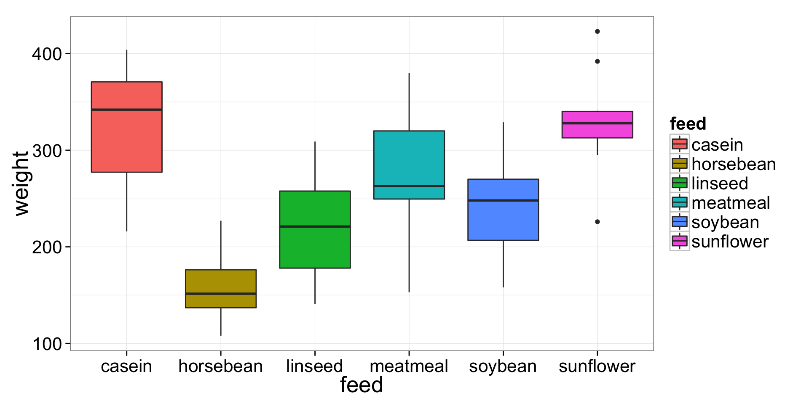

We will use a built-in dataset of chick weights fed on different types of feed. The dataset can be accessed using the built-in variable chickwts. First, lets plot some boxplots using qplot().
library(ggplot2)
qplot(x=feed,
y=weight,
data=chickwts,
geom="boxplot",
fill=feed) +
theme_bw(20)
From the boxplots, it sure looks like there might be differences in weight between the different feed types. To be sure, we should do an ANOVA on the data. You can do an ANOVA in R using the linear model function lm(), like so.
lm()myANOVA <- lm(weight ~ feed, data=chickwts)Nothing apears to happen, because we have saved the output to a variable: myANOVA. Now lets output the results as a standard ANOVA table.
anova(myANOVA)## Analysis of Variance Table
##
## Response: weight
## Df Sum Sq Mean Sq F value Pr(>F)
## feed 5 231129 46226 15.4 5.9e-10 ***
## Residuals 65 195556 3009
## ---
## Signif. codes: 0 '***' 0.001 '**' 0.01 '*' 0.05 '.' 0.1 ' ' 1This informs us that the categorical variable feed has a highly significant effect on the weight variable weight, but it doesn’t tell us anything more specific about the differences between differnt levels of the feed variable. We can get a little more information with the summary() function.
summary()summary(myANOVA)##
## Call:
## lm(formula = weight ~ feed, data = chickwts)
##
## Residuals:
## Min 1Q Median 3Q Max
## -123.91 -34.41 1.57 38.17 103.09
##
## Coefficients:
## Estimate Std. Error t value Pr(>|t|)
## (Intercept) 323.58 15.83 20.44 < 2e-16 ***
## feedhorsebean -163.38 23.49 -6.96 2.1e-09 ***
## feedlinseed -104.83 22.39 -4.68 1.5e-05 ***
## feedmeatmeal -46.67 22.90 -2.04 0.04557 *
## feedsoybean -77.15 21.58 -3.58 0.00067 ***
## feedsunflower 5.33 22.39 0.24 0.81249
## ---
## Signif. codes: 0 '***' 0.001 '**' 0.01 '*' 0.05 '.' 0.1 ' ' 1
##
## Residual standard error: 54.9 on 65 degrees of freedom
## Multiple R-squared: 0.542, Adjusted R-squared: 0.506
## F-statistic: 15.4 on 5 and 65 DF, p-value: 5.94e-10